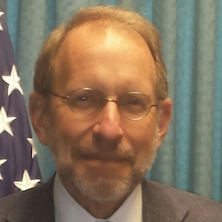

<div id="speakers">
<div class="cell">
<p><strong>Bob Taylor</strong> has been with the Treasury OIG since 1991 and is currently responsible for performance audit work performed at the Treasury Department, including six of its seven bureaus with diverse missions such combating money laundering and terrorist financing, regulating national banks and thrifts, managing and accounting for Federal funds and the public debt, and manufacturing the Nation’s currency and coins. Prior to Treasury OIG, Bob worked for the U.S. Department of Housing and Urban Development OIG for 13 years. Bob is a Certified Public Accountant and Certified Information Systems Auditor, and is a member of AICPA, ISACA, and AGA. In 2011, Bob was a recipient of the Meritorious Presidential Rank Award.</p>

<p>Bob and his staff are responsible for the implementation of the DATA Act oversight requirements for the Treasury Office of Inspector General. He and his staff will also be facilitating a working group made up of representatives across the federal audit community who will determine the framework for the data quality reviews that are required in the law.</p>
</div>
</div>